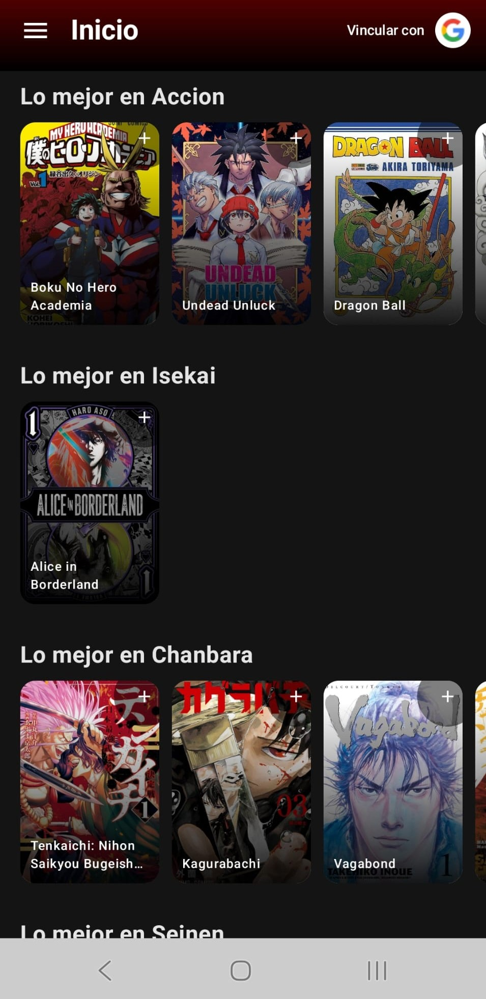
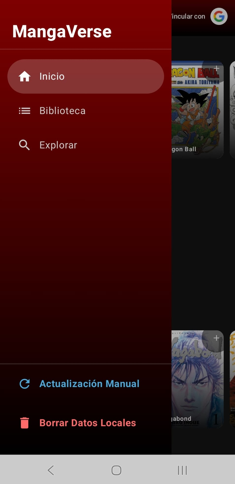

Nota sobre el proyecto: Por motivos de derechos de autor, la aplicación es de uso personal y requiere un código de acceso para visualizar el contenido. Las capturas mostradas a continuación ilustran la interfaz de usuario.
Catálogo Organizado
La pantalla de inicio está diseñada para facilitar el descubrimiento de nuevo contenido. Los mangas se agrupan dinámicamente por géneros (Acción, Isekai, Chanbara, Seinen) en listas de desplazamiento horizontal, optimizando el espacio visual.
- Portadas de alta calidad integradas.
- Navegación fluida entre categorías.
- Vinculación opcional de cuentas de usuario.


Navegación Intuitiva
Se ha implementado un menú lateral desplegable que mantiene la estética limpia de la aplicación. Utiliza un color rojo oscuro que le da identidad al proyecto y agrupa las funciones principales sin saturar la pantalla.
- Acceso rápido a la Biblioteca personal.
- Sección dedicada a explorar nuevos títulos.
- Opciones de mantenimiento como forzar actualización manual o borrar datos locales.